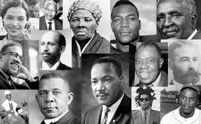
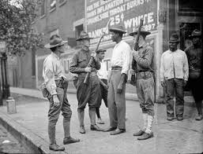
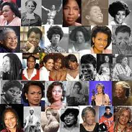
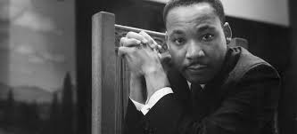

Home
African American
Native American
Asian American
Hispanic or Latino American
Native Hawaiian or pacific Islander
Arab American
African American History:
Origins: African American's story began in Africa around 1526 when Europeans no longer wanted to use identured servants to work on the land in North America. They chose to steal African's from their land and force them into slave labor in North America.
20 Africans were shipped to Jamestown, Virginia and slavery quickly grew from there. You can read more about this by clicking this page .
This page shows the whole timeline of African American history from 1526 to current. More websites to look at: Black past
African American History AAH
A Changing America
History Month
The African American Experience
 Pivotal Moments in African American History: Maryland Passes First Law Banning Interracial Marriage, 1664.
Massachusetts Grants African-Americans Right to Vote, 1780.
Slave Revolt in Louisiana, 1811
Nat Turner Slave Revolt, 1831.
Sojourner Truth, Electrifies Women's Rights Conference, 1851.
Slave Freed in Missouri, But Lincoln Backtracks, 1861
13th Amendment to the U.S. Constitution: Abolition of Slavery 1865
NAACP Established (1909)
Civil Rights Act 1964
Racial Riots: 1967 Newark riots; Newark, New Jersey – July.
1967 Plainfield riots; Plainfield, New Jersey – July.
12th Street riot; Detroit, Michigan – July.
1967 New York City riot; Harlem, New York City – July.
Cambridge riot of 1967; Cambridge, Maryland – July.
1967 Rochester riot; Rochester, New York – July
1921: Tulsa race massacre (Tulsa, Oklahoma)
1923: Rosewood Massacre (Rosewood, Florida)
 African American Female Idols: Rosa Parks
Harriet Tubman
Sojourner Truth
Maya Angelou
Sadie Tanner Mossell Alexander
Ruby Bridges
Bessie Coleman
Claudette Colvin
Mary Fields
 African American Male Idols: Martin Luther King Jr.
Malcolm X
Muhammad Ali
Frederick Douglas
W.E.B Du Bois
Langston Hughes
Richard Allen
Octavius V. Catto
Medgar Evers
